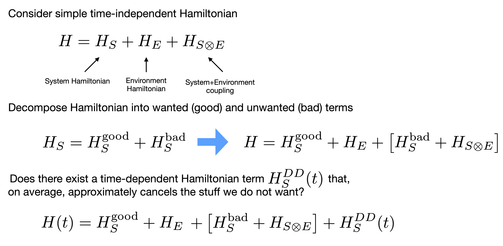
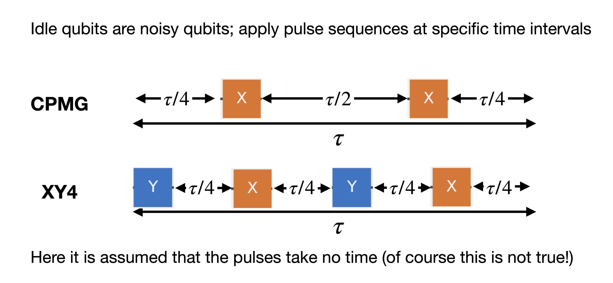
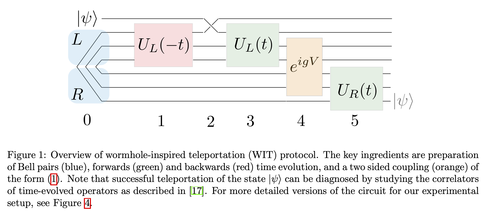

Dynamical decoupling#
Background#
Having learned how to add timing to quantum circuits, and the effect of noise on idle qubits, we can now learn how to suppress these errors via Dynamical Decoupling (DD). We will see that for some problems the use of DD can mean the difference between getting a signal or nothing but noise.
The basic idea behind DD is the following. Suppose you have a system (\(S\)) of interest, e.g. a qubit, that is coupled to an environment (\(E\)) yielding a simple time-independent Hamiltonian. Furthermore, suppose that the system Hamiltonian \(H_{S}\) is comprised of two terms: the “good” Hamiltonian we want, and a “bad” Hamiltonian that includes terms we do not want. For superconducting qubit sytems, the bad-terms are often \(Z\otimes Z\) interaction terms between qubits.
We can then ask, is there some additonal time-dependent Hamiltonian term for the system only, \(H_{S}^{DD}(t)\), such that the bad-terms and system-bath coupling are, on average, suppressed?

The answer is of course yes, and has been studied for some time now. However, while the problem statement is easy to write down, finding optimal time-dependent Hamiltonians is a bit more challenging. Especially when it comes to real-world demonstration on quantum hardware.
As DD is a time-dependent process, we require knowledge of timing in our quantum circuits. This is why we spent a great deal of time understanding how circuit timing works, and looked at what type of errors occur when qubits are idle. The basic idea for implementing DD is to schedule circuits, find the times over which qubits are idle, and replace those idle periods with gate (pulse) sequences at specific intervals that add up to the identity operation. Two common examples are the Carr-Purcell-Meiboom-Gill (CPMG) and XY4 sequences:

CPMG is a very simple sequence, but does not suppress bit-flip errors (\(\sigma_{x}\)) terms. In contrast, XY4, with the addition of y-axis rotations, does protect all single-qubit states to first-order in time \(\tau\). Even though CPMG is not a universal protective sequence, it is simple and surprisingly powerful to use. Let us show this via example. Interested readers can modify the code here to extend to other desired pulse sequences.
Frontmatter#
import numpy as np
from qiskit import *
from qiskit.circuit import Parameter
from qiskit.result import sampled_expectation_value
from qiskit_aer import AerSimulator
# Dynamical decoupling imports
from qiskit.circuit.library import XGate, YGate
from qiskit.transpiler import PassManager, InstructionDurations
from qiskit.transpiler.passes import ALAPScheduleAnalysis, PadDynamicalDecoupling
# Plotting tools
import matplotlib.pyplot as plt
plt.style.use('quantum-light')
%config InlineBackend.figure_format = 'retina'
Example: Wormhole teleportation#
Our example for showing the power of DD on today’s quantum systems comes courtesy of Lawrence Berkeley National Laboratory (LBNL) in the form of wormhole inspired teleportation:
Towards Quantum Gravity in the Lab on Quantum Processors
Illya Shapoval, Vincent Paul Su, Wibe de Jong, Miro Urbanek, Brian Swingle
arXiv:2205.14081
The basic idea behind this work can be seen from Fig.(1) of their paper:

We want to see how the teleportation protocall behaves as we vary the coupling strength \(g\) by evaluating the expectation value \(\langle Z\rangle\) of the state at the end. To this end, we create a quantum circuit parameterized by a single variable \(g\):
g = Parameter('g')
qc = QuantumCircuit(6, 1)
qc.h(0)
qc.cx(0, 5)
qc.h(1)
qc.cx(1, 4)
qc.h(2)
qc.cx(2, 3)
qc.rx(-np.pi/2, 0)
qc.rx(-np.pi/2, 1)
qc.rx(-np.pi/2, 2)
qc.rz(-0.0566794, 0)
qc.rz(-0.01039906, 1)
qc.rz(-0.0632158, 2)
qc.rzz(-np.pi/2, 0, 1)
qc.rzz(-np.pi/2, 1, 2)
qc.rx(-np.pi/2, 0)
qc.rx(-np.pi/2, 1)
qc.rx(-np.pi/2, 2)
qc.rz(-0.0566794, 0)
qc.rz(-0.01039906, 1)
qc.rz(-0.0632158, 2)
qc.rzz(-np.pi/2, 0, 1)
qc.rzz(-np.pi/2, 1, 2)
qc.rx(-np.pi/2, 0)
qc.rx(-np.pi/2, 1)
qc.rx(-np.pi/2, 2)
qc.rz(-0.0566794, 0)
qc.rz(-0.01039906, 1)
qc.rz(-0.0632158, 2)
qc.rzz(-np.pi/2, 0, 1)
qc.rzz(-np.pi/2, 1, 2)
qc.reset(0)
qc.rz(0.0566794, 0)
qc.rz(0.01039906, 1)
qc.rz(0.0632158, 2)
qc.rzz(np.pi/2, 0, 1)
qc.rzz(np.pi/2, 1, 2)
qc.rx(np.pi/2, 0)
qc.rx(np.pi/2, 1)
qc.rx(np.pi/2, 2)
qc.rz(0.0566794, 0)
qc.rz(0.01039906, 1)
qc.rz(0.0632158, 2)
qc.rzz(np.pi/2, 0, 1)
qc.rzz(np.pi/2, 1, 2)
qc.rx(np.pi/2, 0)
qc.rx(np.pi/2, 1)
qc.rx(np.pi/2, 2)
qc.rz(0.0566794, 0)
qc.rz(0.01039906, 1)
qc.rz(0.0632158, 2)
qc.rzz(np.pi/2, 0, 1)
qc.rzz(np.pi/2, 1, 2)
qc.rx(np.pi/2, 0)
qc.rx(np.pi/2, 1)
qc.rx(np.pi/2, 2)
# Here are the two RZZ gates that are parameterized
qc.rzz(g, 1, 4)
qc.rzz(g, 2, 3)
# -------------------------------------------------
qc.rx(np.pi/2, 5)
qc.rx(np.pi/2, 4)
qc.rx(np.pi/2, 3)
qc.rz(0.0566794, 5)
qc.rz(0.01039906, 4)
qc.rz(0.0632158, 3)
qc.rzz(np.pi/2, 5, 4)
qc.rzz(np.pi/2, 4, 3)
qc.rx(np.pi/2, 5)
qc.rx(np.pi/2, 4)
qc.rx(np.pi/2, 3)
qc.rz(0.0566794, 5)
qc.rz(0.01039906, 4)
qc.rz(0.0632158, 3)
qc.rzz(np.pi/2, 5, 4)
qc.rzz(np.pi/2, 4, 3)
qc.rx(np.pi/2, 5)
qc.rx(np.pi/2, 4)
qc.rx(np.pi/2, 3)
qc.rz(0.0566794, 5)
qc.rz(0.01039906, 4)
qc.rz(0.0632158, 3)
qc.rzz(np.pi/2, 5, 4)
qc.rzz(np.pi/2, 4, 3)
qc.measure(5, 0)
qc.draw('mpl')
This circuit has something new that we have not seen before; it has a reset instruction (square with \(|0\rangle\) text). This is an example of a “dynamic” circuit instruction (although a simple one) that takes the state of one or more qubits and uses it later in the computation. We will look at dynamic circuits shortly. More to the point, the above circuit uses only 6 qubits, and thus it is trivial to simulate before execution.
Simulations#
To understand the range of values over which to vary \(g\) let us look at the results from the paper given by Fig.~(5):

We see that rescaled variable \(g/2\pi\) is varied over the range \([0, 0.5]\), with the largest signal at \(g/2\pi = 0.25\). Lets try to first repoduce the ideal result and then do a noisy (not scheduled) simulation for a target system.
To make life easy, lets choose just a few points:
g_vals = np.linspace(0, np.pi, 11)
Ideal simulation#
g_vals = np.linspace(0, np.pi, 11)
ideal_circs = [qc.assign_parameters([val]) for val in g_vals]
sim = AerSimulator()
shots = 10000
ideal_counts = sim.run(ideal_circs, shots=shots).result().get_counts()
ideal_expval = [sampled_expectation_value(cnts, 'Z') for cnts in ideal_counts]
fig, ax = plt.subplots()
ax.plot(g_vals/(2*np.pi), ideal_expval, 'o--', ms=10, lw=1, label='ideal')
ax.legend()
ax.set_xlabel('$g/2\pi$');
Noisy simulation#
IBMQ.load_account()
<AccountProvider for IBMQ(hub='ibm-q', group='open', project='main')>
provider = IBMQ.get_provider(group='deployed')
backend = provider.get_backend('ibmq_kolkata')
noisy_sim = AerSimulator.from_backend(backend)
trans_circs = transpile(ideal_circs, backend, optimization_level=3)
noisy_counts = noisy_sim.run(trans_circs, shots=shots).result().get_counts()
noisy_expval = [sampled_expectation_value(cnts, 'Z') for cnts in noisy_counts]
fig, ax = plt.subplots()
ax.plot(g_vals/(2*np.pi), ideal_expval, 'o--', ms=10, lw=1, label='ideal')
ax.plot(g_vals/(2*np.pi), noisy_expval, 'o--', ms=10, lw=1, label='noisy')
ax.legend()
ax.set_xlabel('$g/2\pi$');
Real execution#
Now lets run the transpiled circuit used the noisy simulation on the target processor:
real_counts = backend.run(trans_circs, shots=shots).result().get_counts()
real_expval = [sampled_expectation_value(cnts, 'Z') for cnts in real_counts]
fig, ax = plt.subplots()
ax.plot(g_vals/(2*np.pi), ideal_expval, 'o--', ms=10, lw=1, label='ideal')
ax.plot(g_vals/(2*np.pi), noisy_expval, 'o--', ms=10, lw=1, label='noisy')
ax.plot(g_vals/(2*np.pi), real_expval, 'o--', ms=10, lw=1, label='real')
ax.legend()
ax.set_xlabel('$g/2\pi$');
This should be very surprising! Here we have an example of a result that is nowhere close to ideal, nor noisy simulation. In fact, the result is essentially noise, and means our simple 6 qubit example completely failed.
Scheduled simulation#
sched_trans_circs = transpile(trans_circs, backend, scheduling_method='alap')
sched_counts = noisy_sim.run(sched_trans_circs, shots=shots).result().get_counts()
sched_expval = [sampled_expectation_value(cnts, 'Z') for cnts in sched_counts]
fig, ax = plt.subplots()
ax.plot(g_vals/(2*np.pi), ideal_expval, 'o--', ms=10, lw=1, label='ideal')
ax.plot(g_vals/(2*np.pi), noisy_expval, 'o--', ms=10, lw=1, label='noisy')
ax.plot(g_vals/(2*np.pi), real_expval, 'o--', ms=10, lw=1, label='real')
ax.plot(g_vals/(2*np.pi), sched_expval, 'o--', ms=10, lw=1, label='scheduled-sim')
ax.legend()
ax.set_xlabel('$g/2\pi$');
Adding Dynamical Decoupling (DD)#
We have seen from our scheduled simulations that we should expect to see some signal, but we have nothing at all. Although it is impossible to immediately know the problem here, there are some clues. First, let us look at one of the scheduled circuits:
sched_trans_circs[1].draw('mpl')

what we see is that, on some of the qubits used in the computation, there are idle times that are long relative to the computation. We can extract these durations, but it is a bit ugly to do so:
import mapomatic as mm
# Find all the "active qubits" in a circuit
active_qubits = mm.active_bits(sched_trans_circs[1])[0]
# Find all the delay (idle) durations on active qubits in the circuit
active_delay_times = []
for op in sched_trans_circs[1].data:
if op.operation.name == 'delay':
if op.qubits[0] in active_qubits:
active_delay_times.append(op.operation.duration)
We can express these in terms of the total duration of the circuit:
delay_fractions = np.array(active_delay_times)/sched_trans_circs[1].duration
np.sort(delay_fractions)[::-1]
array([0.57824592, 0.38392089, 0.38048151, 0.26354256, 0.20077386,
0.16466036, 0.10662081, 0.10232158, 0.09114359, 0.08383491,
0.0816853 , 0.0816853 , 0.0816853 , 0.0816853 , 0.0816853 ,
0.07953568, 0.06448839, 0.05417025, 0.04041273, 0.03654342,
0.03654342, 0.0361135 , 0.0322442 , 0.02579536, 0.02579536,
0.02364574, 0.02364574, 0.02149613, 0.02149613, 0.01934652,
0.01934652, 0.0133276 , 0.00902837, 0.00558899, 0.00429923,
0.00429923, 0.00429923, 0.00429923, 0.00343938])
So what we see is that some of the idle times specified by the delay durations are a large fraction of the total circuit execution time. Thus, there are wide periods of time where are qubits are sitting around doing nothing. Previously we have seen that idle qubits are affected by damping and dephasing; things that DD can in principle help with. So let us see if adding simple DD gate sequences can help here.
To begin, we need a few things. First, we need to ask the backend for durations of all of its supported instructions. Second, we need to understand the constraints on timing enforced by the target hardware
durations = InstructionDurations.from_backend(backend)
constraints = backend.configuration().timing_constraints
constraints
{'acquire_alignment': 16,
'granularity': 16,
'min_length': 64,
'pulse_alignment': 16}
The constraints information is telling us, amongst other things, the requirements placed on pulses by the control electronics. The information is expressed in dt. For DD, the important information is the pulse_alignment that tells us how to position pulses in the discrete timing logic of the electronics.
Setting the DD sequence#
We are now in a position to select the DD gate sequence that we want to use. We have highlighted two such sequences already, and here will will look at the simple CPMG sequence. Constructing this sequence requires actual gate instances imported from the Qiskit circuit library
# CPMG sequence
dd_sequence = [XGate(), XGate()]
# Fraction of duration to place in-between DD sequence gates
spacing = [1/4, 1/2, 1/4]
DD PassManager#
Inserting this sequence into our circuits requires using a PassManager. A PassManager is an object that governs how circuits get transformed into new circuits. For example, every time an user calls transpile, a PassManager is created internally that performs all of the gate transformations, qubit routing, and optimization that is being done.
PassManagers work by executing many basic operations that are defined by “passes”. Each pass does something simple with a given circuit. Some passes analyze circuits, others take that information and use it to perform transformations, e.g. taking an input circuit and expressing it in the basis gate set of the target system. Qiskit supports many different types of analysis and transformation passes, and their usage is beyond the scope of this notebook.
It turns out that we need just a few items. First, we need an analysis pass that looks at timing information for ALAP scheduling. This is the ALAPScheduleAnalysis pass. We can then apply the PadDynamicalDecoupling pass that does the actual gate insertion at the approprate times. These can be added, in order, to a PassManager:
pm = PassManager([ALAPScheduleAnalysis(durations),
PadDynamicalDecoupling(durations, dd_sequence, spacing=spacing,
pulse_alignment=constraints['pulse_alignment'])])
To use the PassManager we just need to call the run() method and pass our list of scheduled circuits. What gets returned is a new collection of circuits with DD sequences inserted into the idle places, if possible
dd_circs = pm.run(sched_trans_circs)
Results with Dynamical Decoupling#
job = backend.run(dd_circs, shots=shots)
dd_counts = job.result().get_counts()
dd_expval = [sampled_expectation_value(cnts, 'Z') for cnts in dd_counts]
fig, ax = plt.subplots()
ax.plot(g_vals/(2*np.pi), ideal_expval, 'o--', ms=10, lw=1, label='Ideal')
ax.plot(g_vals/(2*np.pi), noisy_expval, 'o--', ms=10, lw=1, label='noisy')
ax.plot(g_vals/(2*np.pi), real_expval, 'o--', ms=10, lw=1, label='real')
ax.plot(g_vals/(2*np.pi), sched_expval, 'o--', ms=10, lw=1, label='scheduled-sim')
ax.plot(g_vals/(2*np.pi), dd_expval, 'o--', ms=10, lw=1, label='real+DD')
ax.legend()
ax.set_xlabel('$g/2\pi$');

Hands-on example#
Rerun the above on a different IBM Quantum system with 7+ qubits. How do the results compare with those shown above?